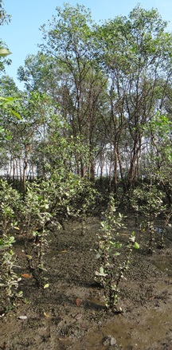
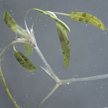
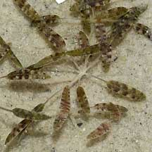
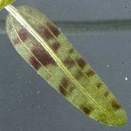
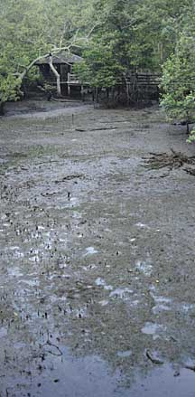
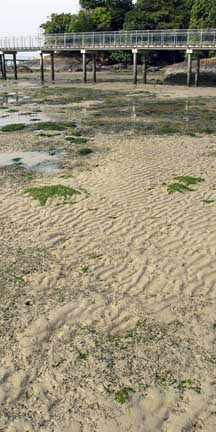
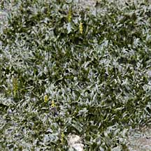
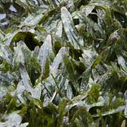

|
|
|
seagrasses
text index | photo
index
|
| Seagrasses > Family Hydrocharitaceae |
| Beccari's
seagrass Halophila beccarii Family Hydrocharitaceae updated Mar 14
Where seen? This small seagrass is quite commonly encountered on Chek Jawa, usually in small patches on bare sand that are exposed at low tide near the boardwalk, with larger meadows on the shore west of House No. 1. The preliminary results of a transact survey of Chek Jawa suggest it is probably sparsely distributed in the Chek Jawa seagrass lagoon. It is also found at Sungei Buloh Wetland Reserve, with wide swathes along Kranji Nature Trail and Mandai mangroves. Globally, it is considered a rare and uncommon seagrass with a distribution restricted to the Bay of Bengal and South China Sea. Singapore lies near the southern most point of the global distribution (see global range on the IUCN Red List). The first specimen of this seagrass was discovered in Sarawak by the intrepid Italian botanist-explorer, Odoardo Beccari and named after him. Features: Beccari's seagrass is the smallest seagrass found on our shores (0.5cm long). The long oval-shaped leaves emerge in a rosette of 5-10 tiny leaves on long thin stems. Each plant may bear both male and female flowers, but usually, only male or female flowers are visible on a plant. The flowers and fruits are tiny. Each fruit contains up to 6 seeds. On Chek Jawa, patches were seen among the byssus nests created by Nest mussels (Musculita senhausia). In Singapore's northern mangroves, mangrove seedlings are often seen in patches of this seagrass. Role in the habitat: Studies suggest that beds of Beccari's seagrass are an important nursery for horseshoe crabs in many regions. Status and threats: It is listed as 'Critically Endangered' on the Red List of threatened plants of Singapore. |
 Mandai mangroves, Jul 2013  Emerges in a rosette of 5-10 leaves. Chek Jawa, Sep 11 |
|
 Chek Jawa, Sep 11 |
 Chek Jawa, Sep 11 |
|
 Lush carpets of this tiny seagrass grow under the Sungei Buloh mangrove boardwalk. Sungei Buloh Wetland Reserve, Aug 09 |
 Patches of this tiny seagrass sometimes grow near the Chek Jawa boardwalk. Chek Jawa, Aug 07 |
.
 Mandai, Mar 11  |
| Beccari's seagrass on Singapore shores |
Photos of Beccari's seagrass for free download from wildsingapore flickr |
| Distribution in Singapore on this wildsingapore flickr map |
Links
|
|
|
|
You CAN make a difference for Singapore's seagrasses!  |